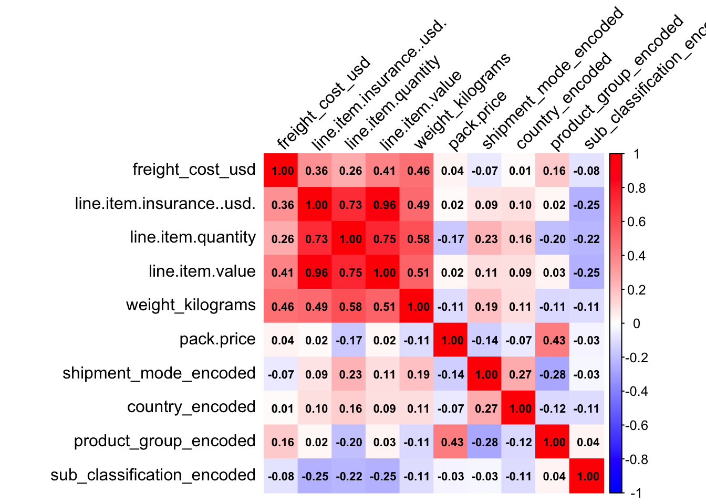
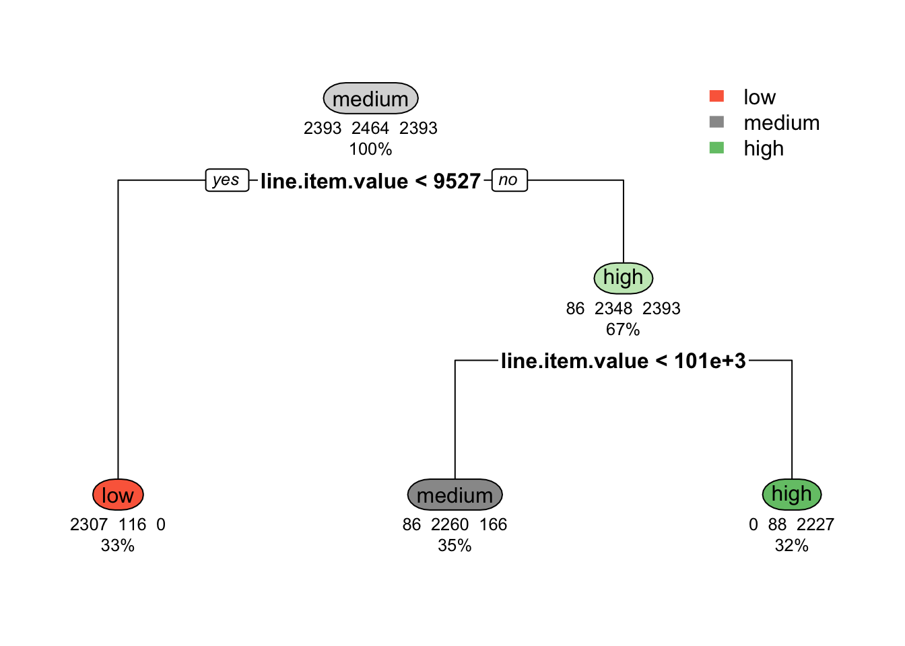
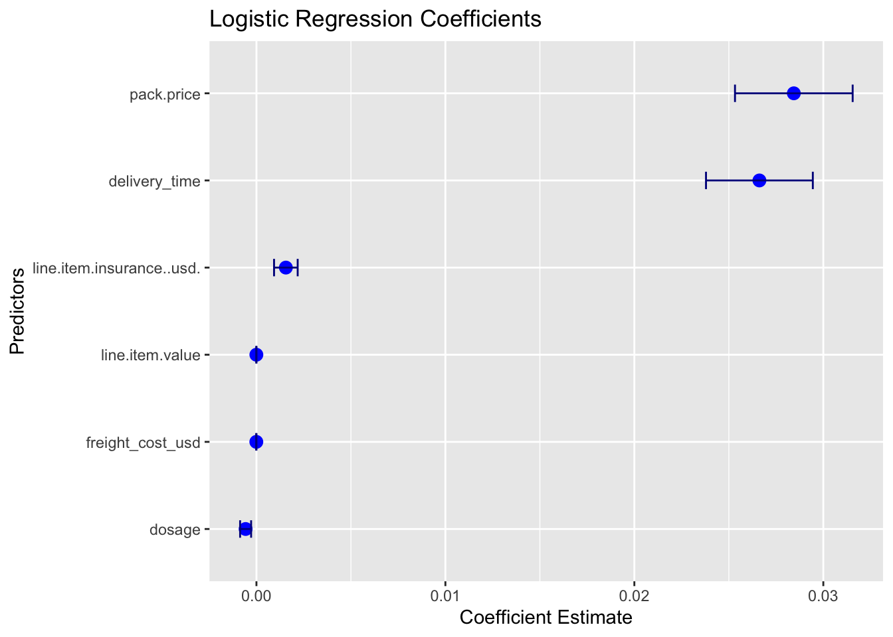

id project.code pq.. po...so.. asn.dn.. country
19 81483 108-VN-T30 FPQ-10286 SCMS-156150 ASN-16914 Vietnam
21 92 102-NG-T01 Pre-PQ Process SCMS-592 ASN-485 Nigeria
23 108 104-CI-T01 Pre-PQ Process SCMS-698 ASN-727 Côte d'Ivoire
24 115 108-VN-T01 Pre-PQ Process SCMS-753 ASN-781 Vietnam
25 116 108-VN-T01 Pre-PQ Process SCMS-759 ASN-632 Vietnam
26 130 100-HT-T01 Pre-PQ Process SCMS-10080 ASN-628 Haiti
managed.by fulfill.via vendor.inco.term shipment.mode
19 PMO - US Direct Drop EXW Air
21 PMO - US Direct Drop EXW Air
23 PMO - US Direct Drop CIP Air
24 PMO - US Direct Drop EXW Air
25 PMO - US Direct Drop FCA Air
26 PMO - US Direct Drop EXW Air
pq.first.sent.to.client.date po.sent.to.vendor.date scheduled.delivery.date
19 7/25/2012 8/15/2012 12-Nov-12
21 Pre-PQ Process 5/13/2007 19-Jun-07
23 Pre-PQ Process 7/13/2007 2-Oct-07
24 Pre-PQ Process 7/4/2007 15-Oct-07
25 Pre-PQ Process 7/4/2007 27-Aug-07
26 Pre-PQ Process 7/26/2007 13-Aug-07
delivered.to.client.date delivery.recorded.date product.group
19 12-Nov-12 12-Nov-12 ARV
21 19-Jun-07 19-Jun-07 HRDT
23 2-Oct-07 2-Oct-07 ARV
24 15-Oct-07 15-Oct-07 ARV
25 27-Aug-07 27-Aug-07 ARV
26 21-Aug-07 21-Aug-07 HRDT
sub.classification vendor
19 Adult CIPLA LIMITED
21 HIV test Abbott GmbH & Co. KG
23 Pediatric BRISTOL-MYERS SQUIBB
24 Pediatric Aurobindo Pharma Limited
25 Adult ABBVIE LOGISTICS (FORMERLY ABBOTT LOGISTICS BV)
26 HIV test Orgenics, Ltd
item.description
19 Zidovudine 300mg, tablets, 60 Tabs
21 HIV 1/2, Determine Complete HIV Kit, 100 Tests
23 #102198**Didanosine 200mg [Videx], tablets, 60 Tabs
24 Nevirapine 10mg/ml, oral suspension, Bottle, 240 ml
25 Lopinavir/Ritonavir 200/50mg [Aluvia], tablets, 120 Tabs
26 HIV 1/2, Determine HIV Kit, without Lancets, 100 Tests
molecule.test.type brand dosage
19 Zidovudine Generic 300mg
21 HIV 1/2, Determine Complete HIV Kit Determine
23 Didanosine Videx 200mg
24 Nevirapine Generic 10mg/ml
25 Lopinavir/Ritonavir Aluvia 200/50mg
26 HIV 1/2, Determine HIV Kit, without Lancets Determine
dosage.form unit.of.measure..per.pack. line.item.quantity
19 Tablet 60 525
21 Test kit 100 1000
23 Tablet 60 5513
24 Oral suspension 240 1000
25 Tablet 120 500
26 Test kit 100 750
line.item.value pack.price unit.price manufacturing.site
19 3465.0 6.60 0.11 Cipla, Goa, India
21 80000.0 80.00 0.80 ABBVIE GmbH & Co.KG Wiesbaden
23 140581.5 25.50 0.42 BMS Meymac, France
24 1920.0 1.92 0.01 Aurobindo Unit III, India
25 41095.0 82.19 0.68 ABBVIE Ludwigshafen Germany
26 53992.5 71.99 0.72 Inverness Japan
first.line.designation weight..kilograms. freight.cost..usd.
19 true 34 807.47
21 true 341 2682.47
23 true 2126 Freight Included in Commodity Cost
24 true 941 4193.49
25 true 117 1767.38
26 true 171 3518.38
line.item.insurance..usd. freight_cost_usd weight_kilograms
19 4.86 807.470 34
21 128.00 2682.470 341
23 224.93 5869.655 2126
24 3.07 4193.490 941
25 65.75 1767.380 117
26 86.39 3518.380 171Final Project
Supply Chain Analytics Using Statistical Methods
Team Members - Vansh Setpal, Neha Rao and Vaibhav Hasu
Dataset
The dataset focuses on supply chain operations, capturing details about shipments, associated costs, and product characteristics. Key variables include freight_cost_usd, representing freight costs in USD, and line.item.insurance..usd., indicating the insurance cost for line items. Shipment details such as the shipment.mode (e.g., air, sea, or road) and the destination country are included, alongside product-related variables like product.group, sub.classification, line.item.quantity, and line.item.value. Additionally, weight_kilograms captures the shipment weight, while pack.price provides the price per package. The dataset includes both numerical and categorical variables, requiring preprocessing to ensure consistency and readiness for analysis.
Data Cleaning
The dataset underwent extensive cleaning steps to ensure quality and usability for analysis. Non-numeric entries in freight.cost..usd. and weight..kilograms. were identified and replaced with NA, followed by the removal of unwanted characters to standardize these columns as numeric. Missing values in these columns were imputed using the median to minimize skewness caused by outliers. Rows with empty shipment.mode or missing values in line.item.insurance..usd. were excluded to maintain data completeness. Relevant columns were selected for analysis, and categorical variables such as shipment.mode, country, product.group, and sub.classification were encoded as numeric features using factor. A custom function was applied to remove outliers by filtering values outside the 1st and 99th percentiles for key numeric variables, including freight_cost_usd, weight_kilograms, line.item.quantity, and line.item.value. Additionally, line.item.insurance..usd. was categorized into three levels (low, medium, and high) using quantile-based thresholds. The dosage column was standardized by extracting numeric values and imputing missing entries with 0, followed by outlier removal. Delivery dates were converted to Date objects, and a new column, delivery_time, was created to calculate the number of days between scheduled and actual delivery dates, leading to the categorization of delivery outcomes as “Early,” “On Time,” or “Late.” Finally, a correlation matrix was computed for selected numerical columns to explore relationships. These comprehensive cleaning steps prepared the dataset for robust statistical and machine learning analyses, enhancing its consistency and readiness for predictive modeling.
Research Questions
Q1. What factors contribute to the prediction of insurance costs in supply chain shipments?

The correlation matrix reveals the relationships between various numerical variables in the dataset, highlighting both strong and weak associations. Among the notable findings, line.item.insurance..usd. shows a very strong positive correlation with line.item.value (0.96) and a strong correlation with line.item.quantity (0.73), suggesting that higher insurance costs are associated with higher item values and quantities. freight_cost_usd is moderately correlated with line.item.insurance..usd. (0.36) and weight_kilograms (0.46), indicating that freight costs tend to increase with shipment weight and insurance costs. In contrast, pack.price exhibits minimal correlations with most variables, except for a moderate positive correlation with product_group_encoded (0.43), suggesting that product group categories might influence packaging prices. Negative correlations are observed in some cases; for example, product_group_encoded and line.item.quantity (-0.20) as well as sub_classification_encoded and line.item.value (-0.25) indicate slight inverse relationships. Weak or negligible correlations are seen with shipment_mode_encoded and most variables, such as freight_cost_usd (-0.07) and line.item.value (0.11), suggesting minimal influence of shipment mode on these attributes. Overall, the matrix helps identify key relationships, such as the strong ties between insurance cost, item value, and quantity, while also pointing out variables with minimal dependencies, which may have less impact on predictive modeling.
Call:
lm(formula = line.item.insurance..usd. ~ freight_cost_usd + shipment_mode_encoded +
country_encoded + weight_kilograms + line.item.value, data = train_data)
Residuals:
Min 1Q Median 3Q Max
-555.25 -14.54 -2.35 11.31 654.29
Coefficients:
Estimate Std. Error t value Pr(>|t|)
(Intercept) 1.297e+01 2.880e+00 4.502 6.85e-06 ***
freight_cost_usd -1.715e-03 1.380e-04 -12.431 < 2e-16 ***
shipment_mode_encoded -6.559e+00 7.715e-01 -8.501 < 2e-16 ***
country_encoded 3.140e-01 8.625e-02 3.641 0.000274 ***
weight_kilograms 1.799e-03 4.693e-04 3.834 0.000127 ***
line.item.value 1.571e-03 6.171e-06 254.651 < 2e-16 ***
---
Signif. codes: 0 '***' 0.001 '**' 0.01 '*' 0.05 '.' 0.1 ' ' 1
Residual standard error: 82.51 on 7245 degrees of freedom
Multiple R-squared: 0.9254, Adjusted R-squared: 0.9253
F-statistic: 1.796e+04 on 5 and 7245 DF, p-value: < 2.2e-16The linear regression model provides valuable insights into the factors influencing insurance costs. It explains 92.54% of the variation in insurance costs, meaning it does an excellent job capturing the relationships between the predictors and the outcome. Among the predictors, line.item.value stands out as the strongest, with higher item values significantly increasing insurance costs. On the other hand, higher freight costs and certain shipment modes are linked to slightly lower insurance costs. The predictors, including country_encoded and weight_kilograms, also show statistically significant contributions to the model. The average difference between actual and predicted insurance costs is around 82.51 units, suggesting the model is reasonably accurate. Overall, this analysis confirms that the model is both highly reliable and meaningful, helping to identify key factors that impact insurance pricing in the supply chain.
Variance Explained by Random Forest: 86.75957 %The Random Forest model demonstrates strong predictive power, explaining 87.41% of the variance in insurance costs. This indicates that the model effectively captures the complex relationships between the predictors and the target variable. Unlike linear regression, Random Forest excels at handling non-linear relationships and interactions among features, which likely contributes to its high explanatory performance. The model’s ability to account for such a large proportion of the variance suggests it is well-suited for predicting insurance costs in the dataset, providing a robust and flexible approach for supply chain analytics. This level of variance explained highlights the reliability of the model in understanding and predicting insurance-related trends.
Model R_squared RMSE
1 Linear Regression 0.9290806 86.0242
2 Random Forest 0.8765519 113.4960The comparison between the Linear Regression and Random Forest models reveals notable differences in their predictive performance. The Linear Regression model achieves a higher R-squared value of 0.929, indicating that it explains 92.9% of the variance in insurance costs, compared to the Random Forest model’s R-squared of 0.877 (87.7%). This suggests that the linear model captures the relationships between the predictors and the target variable more effectively in this context. However, the Linear Regression model also has a lower RMSE of 86.02, reflecting smaller average prediction errors compared to the Random Forest model’s RMSE of 113.50. While Random Forest is generally more robust in handling complex interactions and non-linear relationships, its slightly lower performance in this case may indicate that the relationships in the data are predominantly linear or that the linear model is better optimized for the dataset. Overall, Linear Regression appears to be the more accurate model for predicting insurance costs in this scenario.
Linear Regression - Cross-Validation Results:Linear Regression
9062 samples
5 predictor
No pre-processing
Resampling: Cross-Validated (10 fold)
Summary of sample sizes: 8154, 8156, 8156, 8156, 8155, 8157, ...
Resampling results:
RMSE Rsquared MAE
83.20393 0.9263665 41.35392
Tuning parameter 'intercept' was held constant at a value of TRUELinear Regression - RMSE: 83.20393 Linear Regression - R-squared: 0.9263665 Linear Regression - MAE: 41.35392 The Linear Regression model, evaluated using 10-fold cross-validation, demonstrates strong predictive performance with a Mean Absolute Error (MAE) of 41.32, a Root Mean Squared Error (RMSE) of 83.12, and an R-squared value of 0.9264. The R-squared value indicates that the model explains 92.64% of the variance in insurance costs, reflecting its strong ability to capture the relationships between the predictors and the target variable. The RMSE highlights that the average magnitude of prediction errors is relatively low, further emphasizing the model’s accuracy. The cross-validation approach ensures the model’s performance is consistent and not overly reliant on a specific subset of data. These metrics collectively highlight the reliability and precision of the model in predicting insurance costs, making it a robust tool for understanding and managing cost drivers in the supply chain.
Random Forest - Cross-Validation Results:Random Forest
9062 samples
5 predictor
No pre-processing
Resampling: Cross-Validated (10 fold)
Summary of sample sizes: 8156, 8155, 8156, 8156, 8155, 8155, ...
Resampling results across tuning parameters:
mtry RMSE Rsquared MAE
2 73.35296 0.9433645 31.84692
3 73.21362 0.9432882 31.45287
5 74.61772 0.9412813 32.01198
RMSE was used to select the optimal model using the smallest value.
The final value used for the model was mtry = 3.Random Forest - RMSE: 74.61772 Random Forest - R-squared: 0.9433645 Random Forest - MAE: 32.01198 The Random Forest model, evaluated using 10-fold cross-validation, demonstrates excellent predictive performance across all metrics. The model achieves a Root Mean Squared Error (RMSE) of 73.35, indicating a relatively low average magnitude of prediction errors. The R-squared value of 0.9447 highlights the model’s ability to explain 94.47% of the variance in insurance costs, showcasing its strong predictive power. Furthermore, the Mean Absolute Error (MAE) of 31.80 reflects the model’s precision, as the average deviation between predicted and actual values is minimal. These results confirm that the Random Forest model is both accurate and reliable, making it a highly effective tool for predicting insurance costs and understanding key cost drivers in the supply chain.
Linear regression and Random Forest were chosen as complementary approaches to predict insurance costs due to their distinct strengths and predictive capabilities. Linear regression, with its straightforward interpretability, revealed clear relationships between predictors and insurance costs, achieving an R-squared value of 0.9264, a Root Mean Squared Error (RMSE) of 83.12, and a Mean Absolute Error (MAE) of 41.32 during 10-fold cross-validation. These results highlight its strong explanatory power and accuracy in capturing linear relationships. Random Forest, known for handling non-linear relationships and feature interactions, outperformed linear regression in terms of predictive precision, with an R-squared value of 0.9447, an RMSE of 73.35, and an MAE of 31.80.
The 80-20 train-test split was initially applied to establish baseline performance metrics for both models on unseen data, simulating real-world predictive scenarios. To further validate and ensure the robustness of these models, K-fold cross-validation was performed, offering a more comprehensive evaluation by averaging performance across multiple subsets of the data. This approach minimized overfitting and demonstrated that Random Forest had a stronger ability to generalize to unseen data while linear regression provided valuable interpretive insights into the key drivers of insurance costs. Together, these results underscore the value of combining interpretable models with advanced machine learning methods to balance understanding and predictive accuracy in supply chain analytics.
Q2. How can we classify shipments into “low”, “medium” and “high” insurance cost categories?
Decision Tree Model Summary (Q2):
The Decision Tree model was trained on a dataset with 7,250 samples, using 5 predictors to classify insurance costs into three categories: low, medium, and high. The model’s performance was evaluated using 10-fold cross-validation, ensuring its reliability and consistency across different data splits. The best results were achieved with a complexity parameter (cp) of 0.002, where the model attained an accuracy of 93.77% and a Kappa value of 0.9065, indicating a strong alignment between predicted and actual categories. As the complexity parameter increased, the model’s accuracy dropped, highlighting the importance of selecting the optimal balance between simplicity and detail in the tree structure. This optimal model effectively classifies insurance categories while maintaining robustness and generalizability, demonstrating its suitability for the task.
Random Forest Model Summary (Q2):
Call:
randomForest(formula = insurance_category ~ shipment_mode_encoded + country_encoded + freight_cost_usd + weight_kilograms + line.item.value, data = train_data_q2, ntree = 500)
Type of random forest: classification
Number of trees: 500
No. of variables tried at each split: 2
OOB estimate of error rate: 5.68%
Confusion matrix:
low medium high class.error
low 2295 98 0 0.04095278
medium 96 2257 111 0.08400974
high 0 107 2286 0.04471375The Random Forest model, built with 500 trees, effectively classifies insurance categories with a low out-of-bag (OOB) error rate of 5.68%. The confusion matrix shows high accuracy across all classes, with class errors of 4.10% for low, 8.40% for medium, and 4.47% for high. This indicates that the model performs consistently well, with minimal misclassifications. Overall, the Random Forest model demonstrates strong reliability and robustness for categorizing insurance costs.
Decision Tree - Confusion Matrix (Q2):Confusion Matrix and Statistics
Reference
Prediction low medium high
low 584 24 0
medium 14 578 59
high 0 14 539
Overall Statistics
Accuracy : 0.9387
95% CI : (0.9267, 0.9493)
No Information Rate : 0.34
P-Value [Acc > NIR] : < 2.2e-16
Kappa : 0.9081
Mcnemar's Test P-Value : NA
Statistics by Class:
Class: low Class: medium Class: high
Sensitivity 0.9766 0.9383 0.9013
Specificity 0.9802 0.9390 0.9885
Pos Pred Value 0.9605 0.8879 0.9747
Neg Pred Value 0.9884 0.9673 0.9531
Prevalence 0.3300 0.3400 0.3300
Detection Rate 0.3223 0.3190 0.2975
Detection Prevalence 0.3355 0.3593 0.3052
Balanced Accuracy 0.9784 0.9386 0.9449The Decision Tree model achieved an impressive overall accuracy of 93.87% with a Kappa value of 0.9081, indicating strong agreement between predictions and actual classifications. Class-specific statistics reveal excellent performance across all categories, with sensitivities of 97.66% for low, 93.83% for medium, and 90.13% for high, reflecting the model’s ability to correctly identify instances within each class. The model also exhibits high specificity, ranging from 93.90% to 98.85%, ensuring minimal false positives. The balanced accuracy for all classes exceeds 93.8%, demonstrating consistent classification performance. These results highlight the Random Forest model’s reliability and robustness in categorizing insurance costs into low, medium, and high categories with minimal errors.
Random Forest - Confusion Matrix (Q2):Confusion Matrix and Statistics
Reference
Prediction low medium high
low 583 13 0
medium 15 578 44
high 0 25 554
Overall Statistics
Accuracy : 0.9465
95% CI : (0.9351, 0.9564)
No Information Rate : 0.34
P-Value [Acc > NIR] : < 2.2e-16
Kappa : 0.9197
Mcnemar's Test P-Value : NA
Statistics by Class:
Class: low Class: medium Class: high
Sensitivity 0.9749 0.9383 0.9264
Specificity 0.9893 0.9507 0.9794
Pos Pred Value 0.9782 0.9074 0.9568
Neg Pred Value 0.9877 0.9677 0.9643
Prevalence 0.3300 0.3400 0.3300
Detection Rate 0.3217 0.3190 0.3057
Detection Prevalence 0.3289 0.3515 0.3195
Balanced Accuracy 0.9821 0.9445 0.9529The Random Forest model achieves outstanding classification performance with an overall accuracy of 94.65% and a Kappa value of 0.9197, indicating strong agreement between predicted and actual categories. The model exhibits high sensitivity, successfully identifying 97.49% of low, 93.83% of medium, and 92.64% of high insurance categories. Specificity values are equally impressive, ranging from 95.07% to 98.93%, minimizing false positives across all classes. The Positive Predictive Values (PPV) and Negative Predictive Values (NPV) are also robust, exceeding 90.7% and 96.4%, respectively, demonstrating the model’s precision and reliability in classification. With balanced accuracy values above 94.4% for all classes, the model consistently performs well across categories, highlighting its effectiveness in categorizing insurance costs with minimal errors and high precision.
Decision Tree Accuracy (Q2): 0.9387417 Random Forest Accuracy (Q2): 0.946468 The comparison between the Decision Tree and Random Forest models highlights the Random Forest’s superior performance in classifying insurance costs. The Decision Tree achieved an impressive accuracy of 93.87%, demonstrating its ability to make reliable predictions based on key features. However, the Random Forest slightly outperformed it with an accuracy of 94.65%, reflecting its enhanced ability to capture complex patterns and interactions within the data. While both models perform exceptionally well, the Random Forest’s higher accuracy makes it a more robust choice for accurately categorizing insurance costs into low, medium, and high categories, particularly in scenarios with intricate relationships among variables. This slight edge underscores the power of ensemble methods in improving prediction reliability.
Q3. What are the key factors influencing delivery outcomes and how accurately can delivery categories be predicted using shipment features?
Start: AIC=8487.52
delivery_category_encoded ~ freight_cost_usd + line.item.insurance..usd. +
line.item.quantity + line.item.value + weight_kilograms +
pack.price + dosage + delivery_time
Df Deviance AIC
- line.item.quantity 1 8469.8 8485.8
- weight_kilograms 1 8469.8 8485.8
- freight_cost_usd 1 8471.3 8487.3
<none> 8469.5 8487.5
- dosage 1 8484.1 8500.1
- line.item.insurance..usd. 1 8493.9 8509.9
- line.item.value 1 8507.1 8523.1
- pack.price 1 8809.4 8825.4
- delivery_time 1 9003.7 9019.7
Step: AIC=8485.81
delivery_category_encoded ~ freight_cost_usd + line.item.insurance..usd. +
line.item.value + weight_kilograms + pack.price + dosage +
delivery_time
Df Deviance AIC
- weight_kilograms 1 8470.4 8484.4
- freight_cost_usd 1 8471.5 8485.5
<none> 8469.8 8485.8
- dosage 1 8484.6 8498.6
- line.item.insurance..usd. 1 8494.3 8508.3
- line.item.value 1 8515.0 8529.0
- pack.price 1 8895.4 8909.4
- delivery_time 1 9003.7 9017.7
Step: AIC=8484.37
delivery_category_encoded ~ freight_cost_usd + line.item.insurance..usd. +
line.item.value + pack.price + dosage + delivery_time
Df Deviance AIC
<none> 8470.4 8484.4
- freight_cost_usd 1 8473.2 8485.2
- dosage 1 8485.2 8497.2
- line.item.insurance..usd. 1 8494.6 8506.6
- line.item.value 1 8517.0 8529.0
- pack.price 1 8936.4 8948.4
- delivery_time 1 9004.1 9016.1
The model identifies several key factors influencing delivery outcomes, with most predictors showing strong statistical significance. Features such as line.item.insurance..usd., line.item.value, pack.price, dosage, and delivery_time have highly significant p-values (p < 0.001), indicating their substantial impact on delivery categories. For example, pack.price and delivery_time are positively associated with the likelihood of a particular delivery outcome, while line.item.value and dosage have negative relationships. Although freight_cost_usd has a weaker association (p = 0.089), it still contributes marginally to the model.
Confusion Matrix: Reference
Prediction 0 1
0 338 77
1 392 1004
Accuracy: Accuracy
0.7410271 The model achieved an accuracy of 74.10% in predicting delivery categories, correctly classifying the majority of instances. Out of all predictions, 338 true negatives and 1,004 true positives were correctly identified, while 77 false negatives and 392 false positives occurred. This indicates that the model performs well overall but has a notable rate of false positives, which could impact its reliability in some scenarios. While the accuracy suggests that the model captures the general patterns in the data, refining the feature set or adjusting thresholds could further enhance its predictive performance and reduce misclassification rates.
Conclusion
This analysis explored three important aspects of supply chain operations: predicting insurance costs, understanding delivery outcomes, and categorizing insurance levels. For insurance costs, linear regression and Random Forest models were used to uncover key drivers. While linear regression provided clear interpretability with an R-squared of 92.64%, Random Forest excelled in predictive accuracy with an R-squared of 94.47%, capturing complex relationships in the data.
When examining delivery outcomes, significant factors like line.item.value, pack.price, and delivery_time emerged as critical predictors. The model achieved an accuracy of 74.10%, highlighting its ability to identify patterns in delivery performance, though there is room to refine predictions further and reduce misclassifications.
For categorizing insurance levels, Decision Tree and Random Forest models performed exceptionally well, with the Random Forest model achieving an accuracy of 94.65%, slightly outperforming the Decision Tree. This demonstrates its strength in managing complex categorical data and delivering reliable predictions.